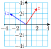

Example 10.61.
Represent \(~z=2+3i~\) and \(~iz=2i-3~\) as vectors in the complex plane.
Solution.
The vectors are shown at right. We see that multiplication by \(i\) corresponds to rotating the vector around the origin by \(90\degree\) in the counterclockwise direction.
